16. External Nitrogen Cycle¶
In addition to the relatively rapid cycling of nitrogen within the plant – litter – soil organic matter system, CLM also represents several slow processes which couple the internal nitrogen cycle to external sources and sinks. Inputs of new mineral nitrogen are from atmospheric deposition and biological nitrogen fixation. Losses of mineral nitrogen are due to nitrification, denitrification, leaching, and losses in fire. While the short-term dynamics of nitrogen limitation depend on the behavior of the internal nitrogen cycle, establishment of total ecosystem nitrogen stocks depends on the balance between sources and sinks in the external nitrogen cycle.
CLM includes two separate treatments of the slow nitrogen cycle. The first is the original CLM-CN formulations, which includes a single soil mineral nitrogen pool to represent both NO3- and NH4+, and with nitrogen losses via denitrification calculated as a constant fraction of mineralization plus a fixed first-order loss of unutilized mineral nitrogen at the end of every timestep. The second is based on the Century N-gas model; this includes separate NH4+ and NO3- pools, as well as environmentally controlled nitrification and denitrification rates. Both are described below.
16.1. Atmospheric Nitrogen Deposition¶
CLM uses a single variable to represent the total deposition of mineral nitrogen onto the land surface, combining wet and dry deposition of NOy and NHx as a single flux (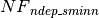, gN m-2 s-1). This flux is intended to represent total reactive nitrogen deposited to the land surface which originates from the following natural and anthropogenic sources (Galloway et al. 2004): formation of NOx during lightning, NOand NH3 emission from wildfire, NOx emission from natural soils, NH3 emission from natural soils, vegetation, and wild animals, NOx and NH3 emission during fossil fuel combustion (both thermal and fuel NOx production), NOx and NH3 emission from other industrial processes, NOx and NH3 emission from fire associated with deforestation, NOx and NH3 emission from agricultural burning, NOx emission from agricultural soils, NH3 emission from agricultural crops, NH3 emission from agricultural animal waste, and NH3 emission from human waste and waste water. The deposition flux is provided as a spatially and (potentially) temporally varying dataset (see section 2.2.3 for a description of the default input dataset).
In the CLM-CN mineral N pool model, the nitrogen deposition flux is
assumed to enter the soil mineral nitrogen pool
( ) directly; while in the Century-based model,
all of the nitrogen is assumed to enter the
NH4+ pool. Real pathways for wet and dry
nitrogen deposition can be more complex than currently represented in
the CLM-CN, including release from melting snowpack and direct foliar
uptake of deposited NOy (e.g. Tye et al. 2005; Vallano
and Sparks, 2007).
) directly; while in the Century-based model,
all of the nitrogen is assumed to enter the
NH4+ pool. Real pathways for wet and dry
nitrogen deposition can be more complex than currently represented in
the CLM-CN, including release from melting snowpack and direct foliar
uptake of deposited NOy (e.g. Tye et al. 2005; Vallano
and Sparks, 2007).
16.2. Biological Nitrogen Fixation¶
The fixation of new reactive nitrogen from atmospheric N2 by soil microorganisms is an important component of both preindustrial and modern-day nitrogen budgets, but a mechanistic understanding of global-scale controls on biological nitrogen fixation (BNF) is still only poorly developed (Cleveland et al. 1999; Galloway et al. 2004). Cleveland et al. (1999) suggested empirical relationships that predict BNF as a function of either evapotranspiration rate or net primary productivity for natural vegetation. CLM assumes that BNF is a function of net primary production (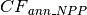, gC m-2 y-1). The rationale for choosing net primary production over evapotranspiration as the predictor is that the two are well-correlated (Parton et al. 1993; Running et al. 1989), and the use of primary production also introduces a known dependence of BNF on the carbon supply to nitrogen fixing microorganisms (Cleveland et al. 1999). The expression used is:
(1)¶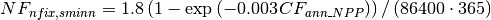
where 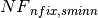 (gN m-2 s-1) is the rate of BNF. Eq. is plotted over a range of annual NPP in Figure 16.1.
Figure 16.1. Biological nitrogen fixation as a function of annual net primary production.

Because of the empirical nature of this NPP-BNF relationship, the timescale for calculating NPP and thus BNF is unconstrained. Using annual NPP, as in CLM4.0, introduces an error at high latitudes because the aseasonal BNF inputs mean that much of the nitrogen is added when the vegetation is dormant and may be lost before it is ever taken up by vegetation. Thus an option was added to CLM to allow for an exponential relaxation (with default e-folding time of 10 days) calculation of NPP, and BNF calculated from that using equation 16.1.
As with Atmospheric N deposition, BNF N inputs are added directly to the mineral N pools. In the CLM-CN N model, this is the single mineral N pool; in the Century-based model, this is the NH4+ pool.
16.3. Nitrification and Denitrification Losses of Nitrogen¶
In order to better understand the structural uncertainty in biogeochemical responses to climate change, CLM includes two alternate representations of the mineral N transformations and losses that define the slow N cycle. Each of these is described below.
16.3.1. 16.3.1 CLM-CN formulation¶
Under aerobic conditions in the soil oxygen is the preferred electron acceptor supporting the metabolism of heterotrophs, but anaerobic conditions favor the activity of soil heterotrophs which use nitrate as an electron acceptor (e.g. Pseudomonas and Clostridium) supporting respiration. This process, known as denitrification, results in the transformation of nitrate to gaseous N2, with smaller associated production of NOx and N2O. It is typically assumed that nitrogen fixation and denitrification were approximately balanced in the preindustrial biosphere (Galloway et al. 2004). It is likely that denitrification can occur within anaerobic microsites within an otherwise aerobic soil environment, leading to large global denitrification fluxes even when fluxes per unit area are rather low (Galloway et al. 2004).
Because the vertical distribution of soil organic matter is not resolved explicitly in CLM-CN, a simple denitrification parameterization is used that treats denitrification as a constant fraction of gross nitrogen mineralization. At each step in the decomposition cascade, if the transformation from an upstream to a downstream pool is predicted to mineralize (as opposed to immobilize) nitrogen, then a constant fraction of the nitrogen mineralization flux is assumed to be lost via denitrification. Due to large uncertainties in the mechanistic understanding of the environmental controls on denitrification, no modifications to the denitrification fraction are made for different soil moisture conditions. This is identified as a high-priority area for future model development.
Denitrification fluxes associated with gross mineralization in the decomposition cascade are calculated as follows:
(2)¶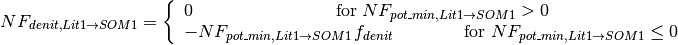
(3)¶
(4)¶
(5)¶
(6)¶
(7)¶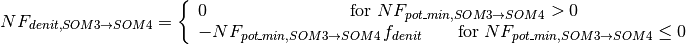
(8)¶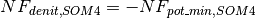
where 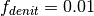 is the constant denitrification
fraction of gross mineralization, and the denitrification fluxes are
assumed to be leaving the soil mineral nitrogen pool
() and entering the atmosphere. The speciation
of gaseous nitrogen fluxes entering the atmosphere (e.g.
N2 vs. NOx or N2O) is not
specified. Providing an explicit speciation of these nitrogen losses is
another high-priority area for future model development.
The model includes one other denitrification pathway, intended to represent the observed losses of mineral nitrogen in systems experiencing nitrogen saturation. One reason this mechanism has been included is in anticipation of an agricultural fertilization flux, provided either through a prescribed dataset or through a prognostic agricultural management routine. The model does not currently include an explicit representation of the fertilization flux, but when it is introduced, it will be necessary to account for the substantial denitrification losses associated with high nitrate concentrations in some heavily fertilized agricultural soils. Nitrogen saturation can also occur in natural vegetation systems, especially under conditions of high atmospheric nitrogen deposition, and so this mechanism plays a useful role even prior to the introduction within the model of agricultural fertilization.
For the purpose of this calculation, nitrogen saturation is evaluated on each timestep, by comparing the total demand for new mineral nitrogen from plants and immobilization with the available soil mineral nitrogen pool. The denitrification of excess soil mineral nitrogen is non-zero whenever the supply of mineral nitrogen exceeds the demand:
(9)¶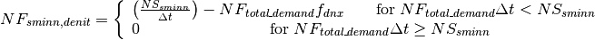
where 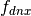 (unitless) is the fraction of excess soil mineral nitrogen subject to denitrification on each timestep. This fraction is parameterized such that 50% of any excess soil mineral nitrogen would be lost to denitrification per day:
(10)¶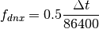
16.3.2. 16.3.2 Century-based formulation¶
CLM includes a detailed representation of nitrification and denitrification based on the Century N model (Parton et al. 1996, 2001; del Grosso et al. 2000). In this approach, nitrification of NH4+ to NO3-` is a function of temperature, moisture, and pH:
(11)¶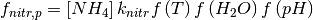
where 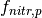 is the potential nitrification rate
(prior to competition for NH4+ by plant
uptake and N immobilization),  is the maximum
nitrification rate (10 % day
is the maximum
nitrification rate (10 % day 1, (Parton et al.
2001)), and f(T) and f(H)2O) are rate modifiers for
temperature and moisture content. CLM uses the same rate modifiers as
are used in the decomposition routine. f(pH) is a rate modifier for
pH; however, because CLM does not calculate pH, instead a fixed pH value
of 6.5 is used in the pH function of Parton et al. (1996).
1, (Parton et al.
2001)), and f(T) and f(H)2O) are rate modifiers for
temperature and moisture content. CLM uses the same rate modifiers as
are used in the decomposition routine. f(pH) is a rate modifier for
pH; however, because CLM does not calculate pH, instead a fixed pH value
of 6.5 is used in the pH function of Parton et al. (1996).
The potential denitrification rate is co-limited by NO-3 concentration and C consumption rates, and occurs only in the anoxic fraction of soils:
(12)¶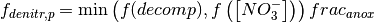
where 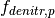 is the potential denitrification rate and f(decomp) and f([NO3- ]) are the carbon- and nitrate- limited denitrification rate functions, respectively, (del Grosso et al. 2000). Because the modified CLM includes explicit treatment of soil biogeochemical vertical profiles, including diffusion of the trace gases O2 and CH4 (Riley et al. 2011a), the calculation of anoxic fraction 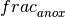 uses this information following the anoxic microsite formulation of Arah and Vinten (1995):
(13)¶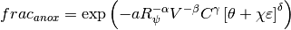
where a,  ,
,  ,
,  , and
, and  are constants (equal to
1.5x10-10, 1.26, 0.6, 0.6, and 0.85, respectively), 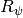 is the
radius of a typical pore space at moisture content
are constants (equal to
1.5x10-10, 1.26, 0.6, 0.6, and 0.85, respectively), 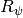 is the
radius of a typical pore space at moisture content  , V
is the O2 consumption rate, C is the O2
concentration,
, V
is the O2 consumption rate, C is the O2
concentration,  is the water-filled pore space,
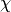 is the ratio of diffusivity of oxygen in water to that in
air, and
is the water-filled pore space,
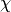 is the ratio of diffusivity of oxygen in water to that in
air, and  is the air-filled pore space (Arah and
Vinten, 1995). These parameters are all calculated separately at each
layer to define a profile of anoxic porespace fraction in the soil.
is the air-filled pore space (Arah and
Vinten, 1995). These parameters are all calculated separately at each
layer to define a profile of anoxic porespace fraction in the soil.
The nitrification/denitrification models used here also predict fluxes
of N2O via a “hole-in-the-pipe” approach (Firestone and
Davidson, 1989). A constant fraction (6 * 10 , Li et
al. 2000) of the nitrification flux is assumed to be
N2O, while the fraction of denitrification going to
N2O, P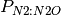, is variable, following
the Century (del Grosso et al. 2000) approach:
, Li et
al. 2000) of the nitrification flux is assumed to be
N2O, while the fraction of denitrification going to
N2O, P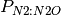, is variable, following
the Century (del Grosso et al. 2000) approach:
(14)¶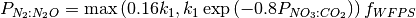
where 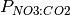 is the ratio of CO2 production in a given soil layer to the NO3-` concentration, 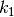 is a function of 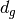, the gas diffusivity through the soil matrix:
(15)¶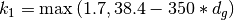
and 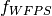 is a function of the water filled pore space WFPS:
(16)¶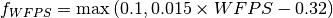
16.4. Leaching Losses of Nitrogen¶
Soil mineral nitrogen remaining after plant uptake, immobilization, and denitrification is subject to loss as a dissolved component of hydrologic outflow from the soil column (leaching). This leaching loss (, gN m-2 s-1) depends on the concentration of dissolved mineral (inorganic) nitrogen in soil water solution (DIN, gN kgH2O), and the rate of hydrologic discharge from the soil column to streamflow (, kgH2O m-2 s-1, section 7.6), as
(17)¶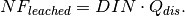
DIN is calculated assuming that a constant fraction (sf, proportion)
of the remaining soil mineral N pool is in soluble form, and that this
entire fraction is dissolved in the total soil water. For the CLM-CN
soil model, it is further assumed that sf = 0.1, representing an
estimated 10% of the total pool as soluble
nitrate, with the remaining 90% as less soluble ammonia; for the
Century-based formulation, the leaching acts only on the
NO3-` pool (which is assumed to be 100%
soluble), while the NH4+ pool is assumed
to be 100% adsorbed onto mineral surfaces and unaffected by leaching.
DIN is then given as
(18)¶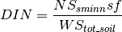
where 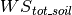 (kgH:sub:2O m-2) is the total mass of soil water content integrated
over the column. The total mineral nitrogen leaching flux is limited on
each time step to not exceed the soluble fraction of
(19)¶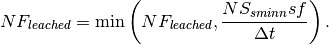
The CLM-CN parameterization of the soluble fraction is poorly constrained by observations. Fraction of total soil mineral N pool present as nitrate will vary spatially and temporally, depending on oxygen status of soils and rates of nitrification. A calibration of this parameterization against observations of dissolved nitrate in headwater streams might be an effective method for imposing better observational constraints at broad spatial scales.
16.5. Losses of Nitrogen Due to Fire¶
The final pathway for nitrogen loss is through combustion, also known as pyrodenitrification. Detailed equations are provided, together with the effects of fire on the carbon budget, in Chapter 18. It is assumed in CLM-CN that losses of N due to fire are restricted to vegetation and litter pools (including coarse woody debris). Loss rates of N are determined by the fraction of biomass lost to combustion, assuming that most of the nitrogen in the burned biomass is lost to the atmosphere (Schlesinger, 1997; Smith et al. 2005). It is assumed that soil organic matter pools of carbon and nitrogen are not directly affected by fire (Neff et al. 2005).